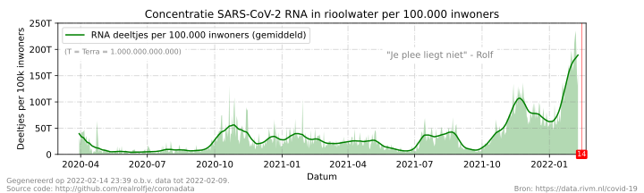

Geen smoesjes, je weet het best:
Houd afstand, werk thuis, was je handen, vermijd drukke plaatsen.
 Eén van de manieren om de verspreiding van het coronavirus SARS-CoV-2 te volgen is door virusdeeltjes in het rioolwater te meten. Dit onderzoek begon kleinschalig in 2020 toen het virus voor het eerst opdook in Nederland. Inmiddels wordt gemeten bij meer dan 300 rioolwaterzuiveringsinstallaties (RWZI’s) in heel Nederland. Voor meer uitleg over hoe deze en andere rioolwatermetingen worden uitgevoerd heeft het RIVM een informatiepagina. Overigens zijn er geen aanwijzingen dat mensen besmet zijn geraakt door virusdeeltjes in het rioolwater, er is tot nu toe nog geen levend virus in het rioolwater aangetroffen.
Per zuiveringsinstallatie wordt er 24 uur lang een monster genomen van het rioolwater. Deze monsters worden door onderzoekers van het RIVM geanalyseerd op het aantal aanwezige virusdeeltjes. Een record bevat voor elke bemonsterde afval-/rioolwaterzuiveringsinstallatie (AWZI/RWZI) het gemiddelde aantal virusdeeltjes in het rioolwater, gecorrigeerd voor de dagelijkse hoeveelheid rioolwater (debiet) en weergegeven per 100.000 inwoners. Een complete uitleg van het gebruikte bestand is te vinden op het open data netwerk van RIVM.
De y-as van de grafiek gaat over het aantal virusdeeltjes per 100.000 inwoners. Dat kunnen er al snel erg veel zijn, daarom bevat de y-as de letter 'T' van "Tera". Tera betekent 1012, ofwel een getal met 12 nullen. Op 2023-07-24 werden er 10.208.010.877.666 virusdeeltjes per 100.000 inwoners gemeten.